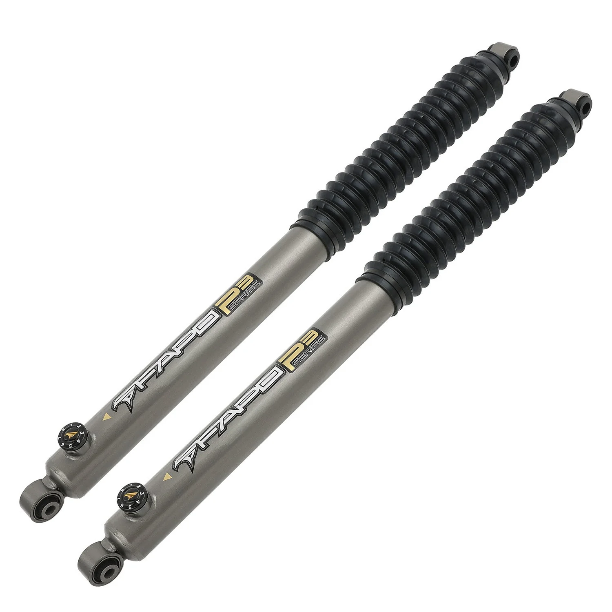

1 / 12P3 off-road tylny amortyzator Do Ford F-250 Super Duty 4WD 1999-2016, 2WD 2005-2006, with Ford F-350 Super Duty 2WD 1999-2016 2-4.5 in Lift PA067730
Instrukcja: Zestawy podnośników do użytku terenowego, poprawiające prowadzenie; nie wysokość fabryczna. Zdecydowanie zaleca się instalację przez doświadczonych specjalistów. Cechy produktu: Długość produktu: 32,08 cala, długość zwinięta: 19,21 cala, długość podróży: 12,87 cala. 100% dokładności dopasowania, łatwa wymiana, amortyzator gazowy, nie wymaga wiercenia, uszczelniony. 8-stopniowa regulacja tłumienia, odpowi…
Instruction: Lift kits for off-road use, improve handling; not factory height. Installation by experienced professionals is highly recommended. Features: Item Length: 32.08 Inch, Collapsed Length: 19.21 Inch, Travel Length: 12.87 Inch. 100% accuracy of fit, easy to replace, gas charged shock, no drilling required, sealed. 8 stages adjustable damping, suitable for different road conditions. Twin-tube design: maintains the OEM twin-tube shock absorber structure, greatly improves comfort and performance compared to OEM. Integrated reinforced rubber bushing, strong and durable. High-quality multi-lip oil seal, suitable for hostile environments. Top-grade high-temperature shock-absorbing oil, suitable for environments with large temperature differences. Package Includes: 2 × Rear Shock Absorbers Warranty: Default 1-year warranty for any manufacturing defect, upgrade to 2 years with our Free Extended Warranty Program.
1199,99 PLN
Opis produktu
Instrukcja:
- Zestawy podnośników do użytku terenowego, poprawiające prowadzenie; nie wysokość fabryczna.
- Zdecydowanie zaleca się instalację przez doświadczonych specjalistów.
Cechy produktu:
- Długość produktu: 32,08 cala, długość zwinięta: 19,21 cala, długość podróży: 12,87 cala.
- 100% dokładności dopasowania, łatwa wymiana, amortyzator gazowy, nie wymaga wiercenia, uszczelniony.
- 8-stopniowa regulacja tłumienia, odpowiednia dla różnych warunków drogowych.
- Konstrukcja dwururowa: zachowuje konstrukcję dwururowego amortyzatora OEM, znacznie poprawia komfort i wydajność w porównaniu do OEM.
- Zintegrowana wzmocniona tuleja gumowa, mocna i trwała.
- Wysokiej jakości wielowargowe uszczelnienie olejowe, odpowiednie do nieprzyjaznych środowisk.
- Najwyższej jakości olej amortyzujący w wysokich temperaturach, odpowiedni do środowisk o dużych różnicach temperatur.
Zawartość zestawu:
- 2 × Amortyzatory tylne
Gwarancja:Standardowa roczna gwarancja na każdą wadę produkcyjną, możliwość rozszerzenia do 2 lat dzięki naszemu programowi bezpłatnej przedłużonej gwarancji.
Instruction:
- Lift kits for off-road use, improve handling; not factory height.
- Installation by experienced professionals is highly recommended.
Features:
- Item Length: 32.08 Inch, Collapsed Length: 19.21 Inch, Travel Length: 12.87 Inch.
- 100% accuracy of fit, easy to replace, gas charged shock, no drilling required, sealed.
- 8 stages adjustable damping, suitable for different road conditions.
- Twin-tube design: maintains the OEM twin-tube shock absorber structure, greatly improves comfort and performance compared to OEM.
- Integrated reinforced rubber bushing, strong and durable.
- High-quality multi-lip oil seal, suitable for hostile environments.
- Top-grade high-temperature shock-absorbing oil, suitable for environments with large temperature differences.
Package Includes:
- 2 × Rear Shock Absorbers
Warranty: Default 1-year warranty for any manufacturing defect, upgrade to 2 years with our Free Extended Warranty Program.
FAPO Polska
Ten produkt obsługujemy lokalnie
Autoryzowana obsługa
FAPO Polska prowadzi katalog, kontakt i zamówienia bez odsyłania klienta do zewnętrznych sklepów.
Dobór po aucie
Sprawdzamy dopasowanie produktu do pojazdu, rocznika i wersji przed finalizacją zamówienia.
Wsparcie po zakupie
Masz kontakt w Polsce w sprawach zamówień, wysyłki, gwarancji i zwrotów.